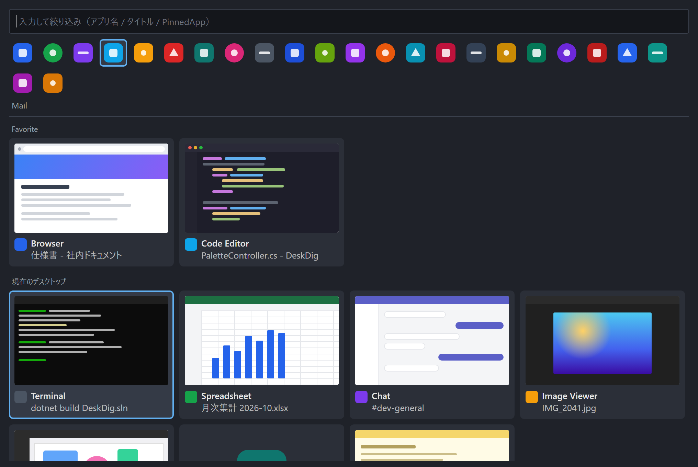

DeskDig は Windows 11 向けのウインドウ切替ツールです。大きな画面で全画面化せずに作業していると、ウインドウは重なり合って埋もれていきます。 デスクトップの余白をダブルクリックするとマウスの手元にパレットが開き、開いているウインドウをライブサムネイル付きで一覧します。選べば前面に出ます。
DeskDig is a free, open-source window switcher for Windows 11. Double-click an empty spot on the desktop to get a thumbnail palette of every open window right under your mouse, pick one, and it comes to the front. It also remembers where each window belongs and launches your pinned taskbar apps.
無料・MIT ライセンス。Windows 11 向け。インストーラーは管理者権限不要で、.NET ランタイムを同梱しています。ポータブル版の zip もあります。

デスクトップの余白をダブルクリックすると、その場所の近くにパレットが開きます。アイコンの上では反応しません。グローバルホットキー（既定は Ctrl+Alt+Space）でも開けます。
開いているウインドウを、動いているサムネイル・アプリアイコン・タイトル付きのタイルで並べます。タイル格子と縦リストを切り替えられます。
お気に入りが最上段、次にこのツールから最近選んだ順、残りは OS の重なり順。よく行き来する 2 つのウインドウは常に先頭近くにあります。
右クリックで「現在の配置を記録」すると、以後そのアプリを選ぶたびに記録した位置とサイズに戻してから前面に出します。モニタが外れていても最寄りのモニタに収めます。
タスクバーに固定したアプリを、タスクバーと同じ順で上段に一覧します。登録作業は不要で、Windows の固定状態をそのまま読みます。ストアアプリも含みます。既に開いていれば起動せずそのウインドウを前面に出します。
絞り込み欄の右の「操作」アイコンで、パレットの横に操作パネルが開きます。出力（スピーカー）と入力（マイク）それぞれの切替・音量・ミュートをその場で行え、イヤホンの抜き差しも即座に反映。出力はイヤホン、入力は内蔵マイクという組み合わせもクリックだけ。環境変数、ネットワーク、Bluetooth、ディスプレイ、バージョン情報への一発ボタンも並びます。「歯車」では PC の要約をコピーできます。画面の隅のフライアウトまでマウスを運ばずに済みます。
パレットを開いたまま文字を打つと、アプリ名・タイトル・固定アプリ名で絞り込みます。矢印キーと Enter だけでも選べます。
| デスクトップ余白をダブルクリック / Ctrl+Alt+Space | パレットを開く（開いていれば閉じる） |
|---|---|
| タイルをクリック / Enter | そのウインドウを前面に出す |
| 固定アプリのアイコンをクリック | 起動する。開いていればそのウインドウを前面に出す |
| 絞り込み欄右の「操作」「歯車」 | 横パネル（操作 / 情報）を開閉する。Esc は横パネル、もう一度でパレットを閉じる |
| 操作パネルの出力デバイスをクリック | 既定の出力先を切り替える（パレットは開いたまま） |
| 文字を入力 | 一覧と固定アプリを絞り込む |
| 矢印キー / Tab | 選択を移動する / ウインドウ一覧と固定アプリの間を行き来する |
| タイルを右クリック | お気に入りに追加・解除、現在の配置を記録、配置を解除 |
| 固定アプリのアイコンをドラッグ | ランチャー内の並び順を変える（設定で「自分で並べ替える」を選んだ場合） |
| Esc / パレットの外をクリック | 閉じる |
DeskDig-Setup-x.y.z.exe をダウンロードして実行します。管理者権限は不要で、ユーザー単位にインストールされます。.NET ランタイムは同梱されています。| DeskDig-Setup-x.y.z.exe | 標準。インストーラー。ランタイム同梱、ユーザー単位、管理者権限不要 |
|---|---|
| DeskDig-x.y.z-win-x64.zip | ポータブル。.NET 9 デスクトップランタイムが入っている PC 向けで小さい |
| DeskDig-x.y.z-win-x64-self-contained.zip | ポータブル。ランタイム同梱の単一実行ファイル。展開して起動するだけ |
アンインストールは Windows の「設定 > アプリ」から行えます。設定は %APPDATA%\DeskDig\ に保存され、アンインストール後も残ります。ポータブル版はフォルダを削除すれば終わりです（自動起動をオンにしていた場合は、先に設定画面でオフにしてください）。